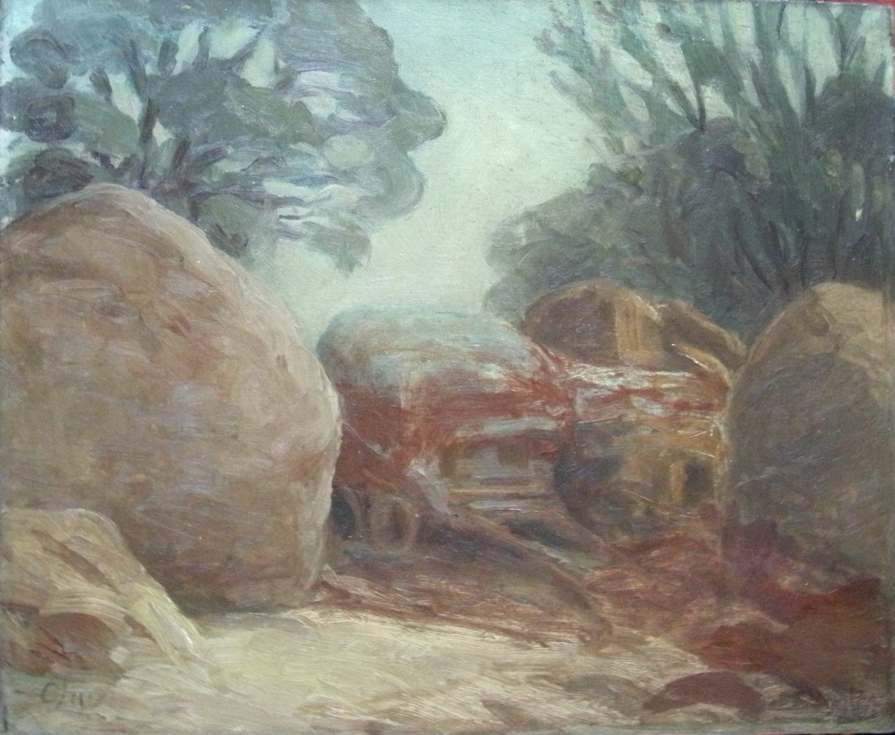

Teng-Hiok Chiu
1903 – 1972
Artist Biography
Teng-Hiok Chiu was born in Xiamen, Fujian province to a wealthy tea merchant family. In 1920, aged 17, he was sent to Harvard and then the School of the Museum of Fine Arts in Boston. He relocated to France in 1923, studying briefly at the Ecole des Beaux Arts in Paris before in 1924 attending London University. From 1925-30 he studied under George Clausen at the Royal Academy of Arts Schools and he was awarded both the prestigious Turner Gold Medal and the Royal Academy Scholarship for Landscape Painting. His work on six occasions between 1927-1938 was chosen for the Royal Academy Annual Exhibition but his first solo show was at Claridge Gallery in 1929. This was followed by another at the Fine Art Society in 1930. Chiu travelled widely round Britain and his naturalistic-style landscapes, mainly oils, were highly regarded and he became the first ever foreigner to be granted membership of the Royal Society of British Artists. A turning point came in 1929-30 when he worked at the British Museum under Laurence Binyon and, studying Chinese classical paintings, began to incorporate a more Eastern feel in his art. Chiu travelled widely in the 1930s, mainly in the Far East and South East Asia but also through Europe and North Africa, before settling in the United States in 1938. Major exhibitions in these years included an exhibition in Beijing in 1930, one in Shanghai in 1933, a 1936 solo show of Chinese landscapes at the Fine Art Society in London and a one-man exhibition at Knoedler Gallery New York in 1942. A 1935 portrait of Madame Chiang kai-shek, first lady of the Chinese Republic, was well received. Chiu in the United States became friendly with Georgia O’Keefe but his work gradually fell out of favour and he died in Connecticut in 1972 in relative obscurity. A memorial exhibition in 2003 at the Frye Art Museum in Seattle helped restore his name and interest in his painting has revived in the 21st century. Bradford Art Gallery in the UK holds his work.

Untitled